← 返回阅读库 · 原论文目录
论文讲解阅读文档 · 机器人学 · v098
C-Learning: Learning to Achieve Goals via Recursive Classification
视频时长 00:24:27；讲解文字 11,012 字符；提取讲解画面 47 张。按视频原顺序阅读，每段文字保留时间戳。
文字来自整段视频的自动语音转写，按自然停顿分段，并与 PPT / 论文页面 / 演示画面对齐。未将讲解压缩为摘要；术语、数字和口述公式请结合画面及原论文核对。 阅读稿已校正规范部分明确术语误识别；原始逐字稿和每处修改记录另行保留。
讲解画面为源视频截图（640×360），不是可编辑 PPT 文件。全片按每秒 2 帧扫描内容变化，逐步展开页保留；连续动画保留代表画面。清晰度受源视频限制。
下载完整资料包 · 含离线 HTML、PDF、Word、全部 PPT 画面和字幕。
原论文与材料
C-Learning: Learning to Achieve Goals via Recursive Classification · 下载完整 PDF（26 页）
按时间阅读
00:00:00–00:00:35 · 画面 001
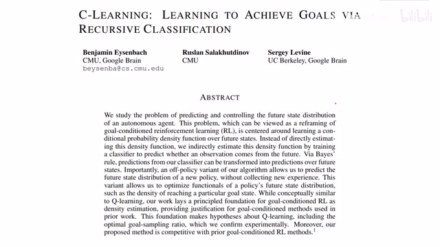
00:00:00–00:00:35 · 画面 001大家好，今天我们来介绍 C-learningLearning to achieve goals via recursive classification。那么这篇论文呢，重新定义了 Goal-conditional reinforcement learning。那么通过估算从当前的状态出发能够到达什么样的状态，或者说是到达某一个状态的概率是多少。那么通过估算这样一个这个概率分布呢，我们的 agent 可以知道自己未来能去往何方。
在此基础上呢，就可以学到一个好的 policy，能够引导我们向特定的目标前进。那么在今天的视频中呢，我们会首先介绍一下作者是怎么样定义这个 goal condition 的 reinforcement learning 这个问题，以及在解决这个问题是原来的 q learning 它的局限。然后呢，是本文提出的 c learning，它先从一个 on policy 的版本开始，然后如何进化的 off policy。
00:00:35–00:01:11 · 画面 002
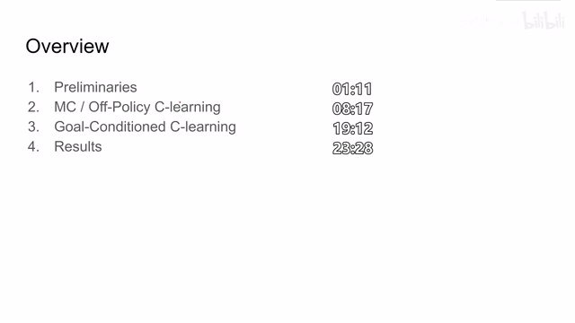
00:00:35–00:01:11 · 画面 002那么随后呢，是我们在这个 off policy c learning 的基础上提出了这个 go condition c learning。之前因为这个 on policy off policy 它都不是一个完整的算法，而在这里呢，我们就已经形成了一个完整的 reinforcement learning 的方法。那么最后呢，是作者汇报的一些结果。那么首先来介绍什么是 go condition reinforcement learning。在实际环境中呢，我们常常希望我们的 agent 可以执行多种任务。
00:01:11–00:02:06 · 画面 003
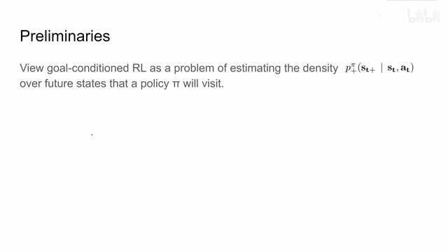
00:01:11–00:02:06 · 画面 003那么比如最简单的，我的机械手想到达不同的位置，或者说是我拿起一个锤子，我想砸不同的钉子等等这样的不同的任务。那么为了完成不同的任务呢，我们肯定需要不同的 policy。那么这个呢，就是所谓的 goal conditioned。那么在之前的研究中呢，这些 goal conditioned reinforcement learning 呢，主要是依靠 behavior cloning 或者是 model based planning 这样的方法呢来实现。那么在本文中呢，作者换了一个角度。
他认为，说我能不能去估计一个概率密度函数。那么这个概率密度函数呢，描述的是我从当前的状态能够去往下一个未来状态时候的它的概率。那么具体来看，这里作者定义了一个叫做 future gamma discounted state density function。那么这个方式呢，是说我在当前的这个 state t 和 action t 这个条件这个 condition 的约束下，使用了我现在的这个 policy pi。
00:02:06–00:03:32 · 画面 004
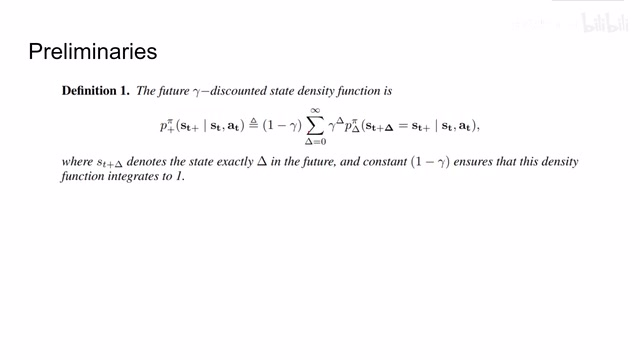
00:02:06–00:03:32 · 画面 004我能够到达未来的某一个状态 ST plus 这个概率。那么根据定义呢，它是写成了这个 project 当中每往下走一步这个事情发生的概率。然后呢，经过这个 discounted，也就是说我更加看重靠近现在时刻的这个概率之后，这样的一个概率的和。那么因为这是一个概率密度函数嘛，我们要它的密度积起来等于 1。所以类似 Gamma 的等比数列求和，它的结果是 1-Gamma 分之 1。这里乘上一个 1-Gamma 来把整个概率密度的积分给它拉到 1。那么这个概率就反映了从当前 ST 出发这个 agent 有多大的概率能够前往 STplus。那么显然，如果我们收集很多无限程的 Retrace，然后计算我们的 agent 经过每一个状态的次数。
然后呢，得到每一个状态它的权重。这样子呢，我就能够很精确的计算出从我当前的这个状态出发能够或者说最有可能前往的状态。那么现在呢，我们把这种描述和 qlearning 给它找起关系来。假如说在一个离散状态空间里，我们定义我们的 agent 达到这个 stplus 某一个状态的时候呢，它会收到一点的这个 reward，然后呢，这个序列就在这结束了。
00:03:32–00:05:02 · 画面 005
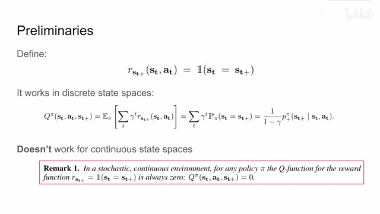
00:03:32–00:05:02 · 画面 005对于这个问题呢，我们可以把它的 Q function 写出来。那么因为每一个时刻，假如说这个 agent 没有到达最终的那个目标，它的 reward 都是 0，所以前面那块呢，我们就直接省略了。那么最后呢，每个状态能够传递到的 reward 是经过这个 gamma discount 之后，最终状态的这个 reward 一步一步给它传递过来的。那我们当前状态下这个 STAT 状态下的这个 Q function，针对这个 ST plus 这个目标它的这个 Q value就应该是写成这样一个期望的形式。那么还是因为我们在一个离散的状态空间里面，那么这个期望呢，其实就是我们的这个 policy pi 在经过这个 gamma discounted 之后，在未来的某一个时刻使我们的 agent 到达 st plus 整个这个事件它的这个概率。那么如果我们观察这个原来式呢，它正好跟我们之前介绍的这个 future gamma discounted state density function
它是一致的那么我们这里只要把这个 scale 给它处理一下就可以得到了这个 q function 跟我们这个 future gamma discounted state density function 我这里简称叫它 density function 它们之间的联系这个呢那么这个等式呢在我们离散的状态空间下它是成立的但是呢问题在于如果把我们的问题移到了一个连续的状态空间那事情呢就变得有些棘手了
00:05:02–00:05:03 · 画面 006
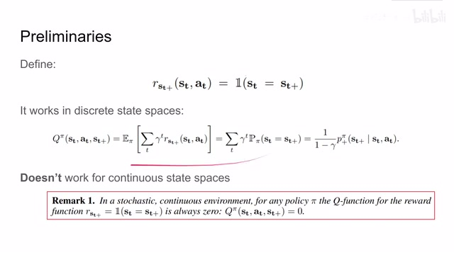
00:05:02–00:05:03 · 画面 00600:05:03–00:05:54 · 画面 007
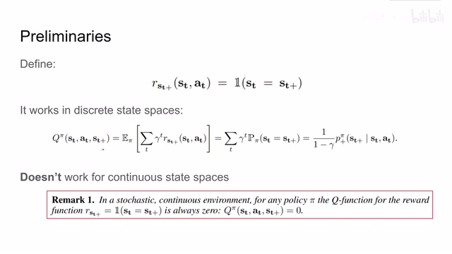
00:05:03–00:05:54 · 画面 007那么作者认为呢，在一个随机连续的环境当中，对于任何的 policy，这个 q function 对于这种样子定义的一个稀疏的 reward，因为它只有在达到最终的目标的时候准确达到最终目标的是那个时刻它才有一个 reward 等于 1，那么在这种环境下呢产生的这个 q function 它呢始终是 0。也就是说，因为这个奖励太过于稀疏了，我们的前面的这个 q function 呢很难被传递到真正有效的值。
那么当然呢，这个表述呢也有人认为他过于强了，这个我这里不做评论，大家就是知道这样不同的意见就可以了。那么根据这个观察呢，作者这里认为说我们这个 reward function 啊，q function 还有说这个 future state distribution 也就是我们之前那个 density 方式他们之间的关系，在之前的一些工作当中是没有得到很好的解释的。因为在之前的这些论文当中呢
00:05:54–00:06:31 · 画面 008
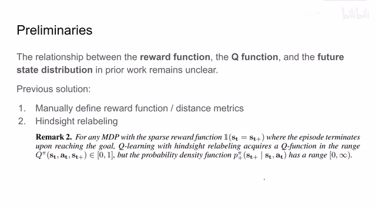
00:05:54–00:06:31 · 画面 008很多是依赖于手工的去定义一个 reward 方式来把 reward 变得不是那么稀疏，或者说定义一个 distance matrix 来引导我们的 agent 向我们最终的目标来去靠拢。那么此外还有一类的思路就是 hindsight relabeling，这里把我们命令给 agentcommanded goal 给它换成了 agent 实际到达的 goal。那么这样子我们不用说定义一个 reward 方式
00:06:31–00:06:32 · 画面 009
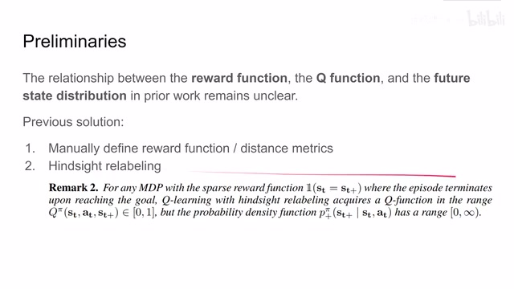
00:06:31–00:06:32 · 画面 00900:06:32–00:06:55 · 画面 010
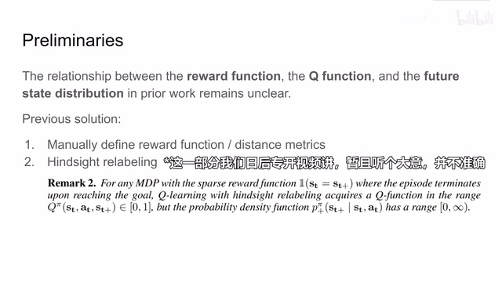
00:06:32–00:06:55 · 画面 010就可以把这个 q value 这个 reward 向前传递过去。那么显然呢，在这种情况下我们的 q function 他学到的就不是我们之前想要的那个 expected discounted reward。当然呢，也有另一种解释认为说，我们即便没有学到那个 discounted reward，我们能把我们之前提到 density function 也就是我们说的这个 filter gamma discounted density function 来把它给学习出来。那么这样子我们的 q learning 是不是也能用了呢？
00:06:55–00:07:32 · 画面 011
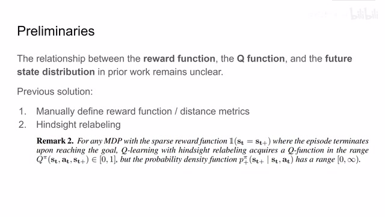
00:06:55–00:07:32 · 画面 011但实际上呢，作者说这也不一定，因为呢在我们之前的那种 HandSightLelabeling 这样的配置下面呢，我们的 Q function 呢学到的值呢它是在 0 到 1 范围之间的。但是呢，这个 Probability Density Function 因为它这个 Density Function 它不是一个 cdf，它是一个 pdf，所以呢它的值可能是 0 到无穷，它的这个变化范围呢是非常大的。
00:07:32–00:07:33 · 画面 012
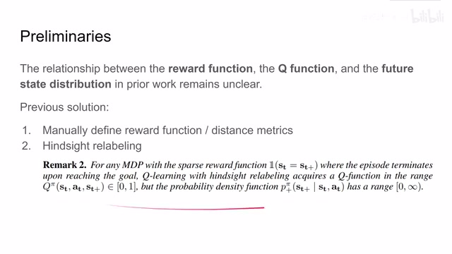
00:07:32–00:07:33 · 画面 01200:07:33–00:07:42 · 画面 013
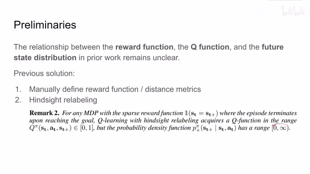
00:07:33–00:07:42 · 画面 013我们不太好用 Q 方式去直接描述这个 density 方式。这里作者在论文的附录中也举了两个反例，感兴趣的朋友可以去看一下。那么综上所述 ，Q 方式在这种环境的配置下，它的学习是行不太通的。那么因此作者就想，我能不能设计一种方法，或者说是我直接引用一个网络
00:07:42–00:07:50 · 画面 014
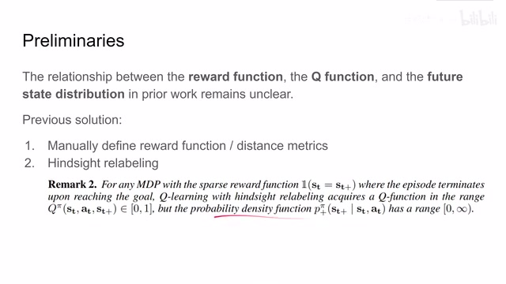
00:07:42–00:07:50 · 画面 01400:07:50–00:07:51 · 画面 015
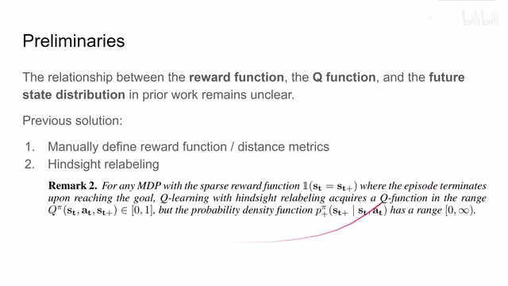
00:07:50–00:07:51 · 画面 01500:07:51–00:08:17 · 画面 016
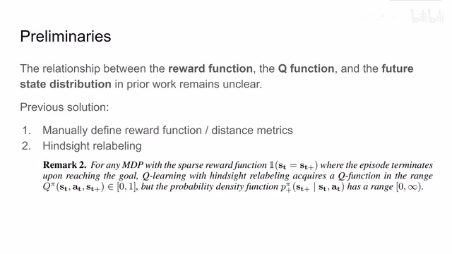
00:07:51–00:08:17 · 画面 016来让他去描述这个 future probability density 方式。我直接去学他这样子呢，我就避免去再去设计如果方式啊，再去用 q 方式这些方法来纠缠这个问题了。那么所以呢，这里作者给了一个最初的想法，也就是说呢，我们有一个网络 f，他呢在特定的 policy 和这个参数θ下面，他呢去尽量的近似这个 future state density 方式
00:08:17–00:09:38 · 画面 017
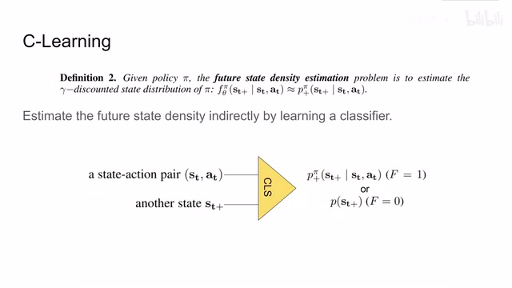
00:08:17–00:09:38 · 画面 017但是根据我们之前的轨迹直接去训练，直接去学习这样一个 distribution，那其实也是非常困难的。这相当于我们要用一个生成式的模型去拟合这样一个未知的 distribution，这个实在是太难了。所以作者这里说，我不如换一种思路，我使用一个 classifier，我用一个 discriminator，用一个判别式的模型来去估计这个 future state density那么具体来说呢，就是我给一个当前的这个 state action pair，我给出另一个未来的 state，我希望我的这个 classifier 来判断这个 state 是从我们的当前的这个 state action 出发能够得到的，还是说我们从当前的 state action 永远得不到这个 state。我用一个这个二分类的这个 classifier 来去判断这个问题。那么假如说我们训练好这个 classifier，我们给它很多的这个未来的样本
那么我们是不是就可以通过不断的这个让它判别这样子呢，我们就规避了直接去拟合这个 density function。那么假如说我现在这个分类器能够很好的训练，我得到这个 base2 分类器呢，它判断说这个 STplus 是从 STAT 发展出来这个变换出来的这个概率呢，是这个 P。那么这个 P 的表达式呢，是应该是一个形如这样子一个表达式
00:09:38–00:11:29 · 画面 018
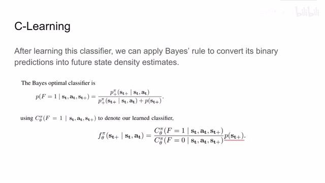
00:09:38–00:11:29 · 画面 018那么这个表达式呢，就把我们之前想要估计的这个 density function 来包含在其中了。那么现在呢，假如我有了这样一个 classifier，我要它预测这个 ST plus 是从 STAT 发展出来的这个概率，得到这个是 C Theta Pi。然后呢，用 1 减去它就得到这个 F 等于 0，也就是说这个 ST plus 不是从 STAT 它的这个概率中发展出来的，而是我们认为说这个 ST plus 呢是随机抽样产生的这么一个状态那么把它两个一除呢，就得到这个 density function 直接比上这个 sc plus。这样子呢，我们这一项就只剩下这一个这个 density function 了。那么这个呢，就是我们的这个 f 想要估计的这个 density distribution。那么我们的 agent 呢，每次只要说选择这个 density function，它能够尽量大的这个 action 去执行
那这样子呢，我们就有越来越高的概率，越来越大的可能去接近到我们这个目标 ST plus。那这里呢，我们有了一个 classifier，还有一项呢是这个 ST plus 它的概率，而这个概率呢，它又不影响这个 ST 和 AT 跟它们就没有关系，所以说呢，你就可以把它忽略掉。我们实际上不需要去估计这个概率。那么这样子呢，作者就非常巧妙的用一个 classifier 来去描述这个 future state density好，那么在确定了这样一个思路可行的之后呢，我们就要看怎么去训练这样一个 classifier。其实呢，就跟我们之前说的一样，我们呢，这个 classifier 呢，要把从我们当前的这个 state 发展出来的未来的 state 作为 positive samples，把从 replay buffer 中随机提取出来的一个状态我们作为 negative samples。那么这样子呢，一个简单的二分类问题，我们上这个 cross entropy
00:11:29–00:12:53 · 画面 019
00:11:29–00:12:53 · 画面 019就可以来给他解决了，但是呢，我们这里的 positive samples 他不是乱采，因为我们希望我们的这个，因为我们限制我们更关注于敌当前这个状态更时间上更近的这样一个状态，所以说呢，我们这里有这个 gamma discounted，那么为了反映这个 gamma discounted 的权重呢，哎，我们正好发现把这个 gamma discounted 加上去之后呢，原来的一个 unified distribution它就正好变成了一个 geometry distribution，也就是几何分布，那么这样子呢，我们在采集这个 positive sample 的时候呢，就可以直接的先从这个几何分布中采样，那么这个几何分布呢，是关于这个 delta，也就是从当前这个状态未来走 delta 步，它呢正好反映了我们这个 gamma discounting 这个变化的趋势，那么这样子呢，从我们当前这个状态所在的这个 trajectory 采集到这个样本，我们先有一个 delta
然后呢，从当前的状态数往后 delta 步，把这个样本抓出来作为我们的 positive samples，然后呢，也有这个 negative samples，用上上面这个 full cross entropy 这个 loss 就可以训练出我们这个 classifier，那么这个呢就是最简单的 C-learning，它的核心的思想，这个呢是这个方法的流程，当然这里是只有这个 classifier learning，它没有是一个 policy learning，所以说我们这里只训练一个 classifier 就可以了
00:12:53–00:12:54 · 画面 020
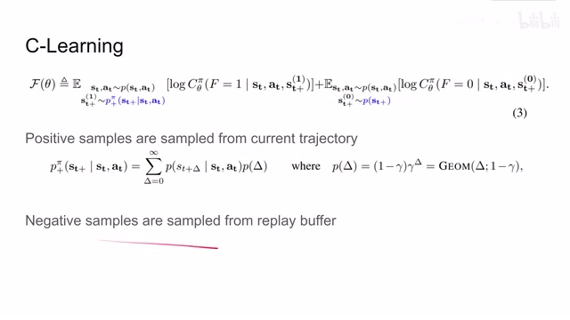
00:12:53–00:12:54 · 画面 02000:12:54–00:13:04 · 画面 021
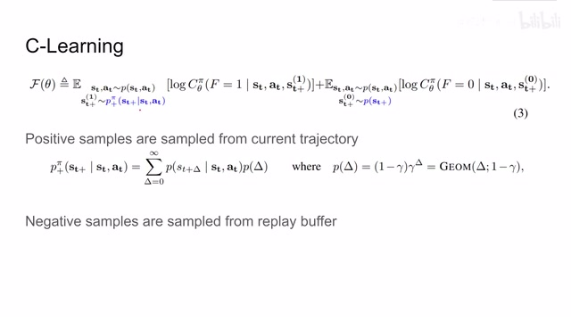
00:12:54–00:13:04 · 画面 02100:13:04–00:14:15 · 画面 022
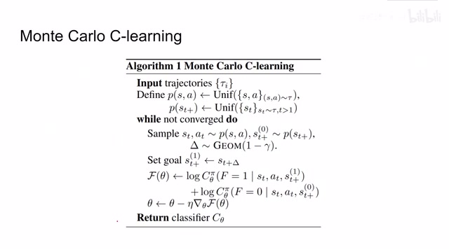
00:13:04–00:14:15 · 画面 022我们可以看到，一开始我们在当前的 policy 下面收集了很多 trajectories，我们这里均匀的从这个 trajectories 中采这个 state action pair，还有从所有的这个 trajectories 中采不同的 state，那么一开始呢，我们从对放本来说呢，我们可以直接从这个 replaybar 中随便抓几个样本出来就可以了，那对于正样本来说呢，首先我们需要一个当前的状态 state action，然后呢，我们再通过这个几个分布采样出一个权重来计算说，我们要取当前状态之后多少步的这个状态作为正样本，那么取到这个 st 加 delta 步的这个状态作为我们的正样本，然后呢，把这个负样本一起投到这个 classifier 里面，我们算 entropy，这样子呢就可以不断的更新我们的 classifier，那么随着我们的训练，我们的 classifier 呢就可以去区别说，这个状态是我们有更大的概率可能从当前的状态
通过不断的变化去获得，还是说我这个未来的状态它就是一个随机产生的状态，那么显然，因为我们之前的这个方法它是 on-policy，它有很多的局限，所以呢我们想要一个 off policy 的方法，但是呢，我们从 on-policy 转到 off policy 呢，它主要呢存在这两个问题，那么第一个也是最显然的就是我们的 policy 它是会影响这个 future density distribution，也就是说我采用不同的 policy
00:14:15–00:15:11 · 画面 023
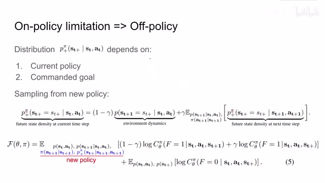
00:14:15–00:15:11 · 画面 023那最简单的，我采用不同的 policy，那我能够从当前状态得到的未来的状态肯定是不一样的，那么此外呢，哪怕我限制住我当前的这个 policy，我锁住它的参数不让它变化，那么还有一个问题在限制我们呢，其实就是这个 commanded goal，也就是这个 ST plus，我从当前的状态出发为了到达不同的目标，它肯定的 density function 又是不一样的，那么怎么样去规避这两个问题呢这里呢作者说我们有一个两步的途径那么首先第一步呢是把我们原来的这个 future state density function 给它写成这个 recursive 的形式就像我们之前写这个 qvalue 一样写成当前时刻的 environment dynamics 加上下一个时刻的 future state density 这个就是典型的动态规划的思想我只关注从这一个时刻到下一个时刻它们之间的变化然后呢下一时刻呢就可以不断的迭代下去
00:15:11–00:15:38 · 画面 024
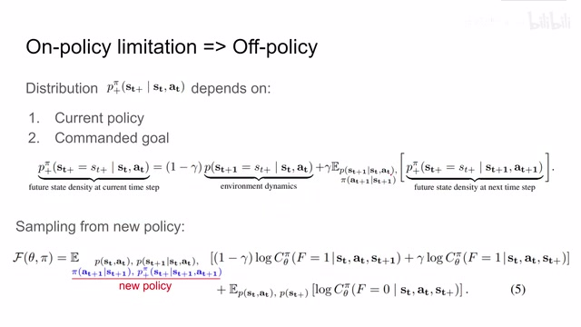
00:15:11–00:15:38 · 画面 024那么把这样一个表达式呢带回到我们之前的这个 loss function 里面我们可以看到呢主要是就是第一项它现在呢列成了这个两个部分因为我们的 policy 在这个过程中已经变化了所以说这个期望呢应该是依赖于新的 policy 产生的这个样本而至于后面的这部分呢我们这个副样本呢都是从这个 replay buffer 中产生的这部分的期望呢是没有变化的那么如何把这个新的 policy 它的期望
00:15:38–00:15:39 · 画面 025
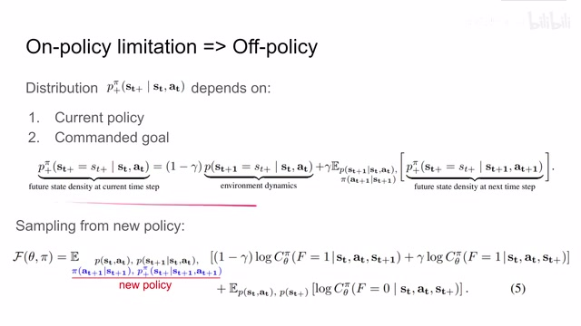
00:15:38–00:15:39 · 画面 02500:15:39–00:16:08 · 画面 026
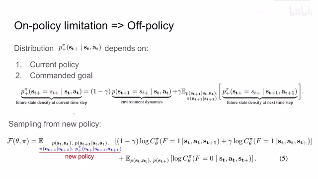
00:15:39–00:16:08 · 画面 026我们给它估计出来呢那这就是非常经典的我们的 importance sample 我们通过这个 trig 来把我们新的 policy sample 和我们的旧的 distribution 给它联系起来那么这样子呢我只需要找到这两个 distribution 之间它们这个比例这个 Omega 这个因子就可以了那么这个因子呢它的定义呢我的这个新的 policy distribution 和旧的这个 distribution 它们的这个比例
00:16:08–00:16:43 · 画面 027
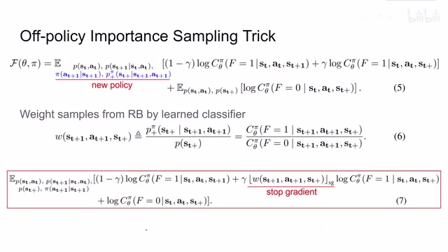
00:16:08–00:16:43 · 画面 027而这个表达式呢我们正好之前见过就是我们可以通过这个 classifier 我们如果说训练好的这个 classifier 它应该是 BSTU 的 classifier 那我们把这个式子它的左右两边都除以这个 st plus 它的 probability 它的 distribution 那么这个 f theta 呢其实就是我们估计的这个 p plus pi 对吧然后两边都除下正好呢就满足这个 Omega 的定义也就是说呢我们可以通过 classifier
00:16:43–00:18:05 · 画面 028
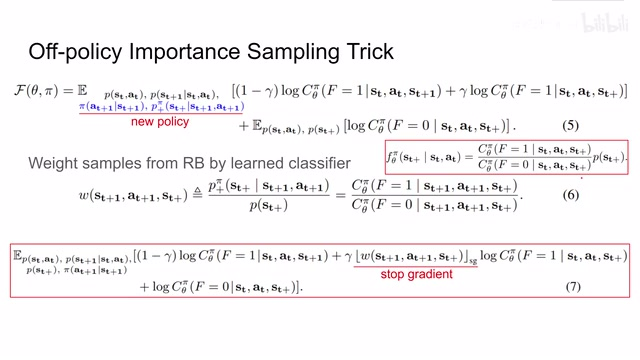
00:16:43–00:18:05 · 画面 028他的这两个预测的结果来直接把这个 Omega 给他推算出来这样子我们使用这个 Importance Sampling 就可以把原来我们需要依赖于新的这个 Policy 他的这个期望给他变换到我们只依赖于这个在 Replay Buffer 中提出来的这个状态的 Distribution 就可以了那么这样其实是非常好的这样子两项他们的期望呢就在一起了然后呢我们就可以把这两个期望合并起来那么最终我们的 loss function 呢就变成了这个样子那么像这一项呢是 environment dynamics 它是不变的这一项呢我们有了 importance sampling 所以呢因为我们是用这个 classifier 来估计的这个 Omega 在这个过程中呢我们这个 Omega 呢它就是一个参数我们是不希望通过它这条路来进行训练的所以呢这里要这个 stop gradient 然后这一步呢是我们的这个 recursive 就是下一个时刻的 probability density function
那么然后呢这个呢就是我们的副样本这样子呢我们的所有的样本呢都可以从这个 replay buffer 中产生这个呢就是我们的 off policy 的算法好的我们现在可以来对比一下原来的 moncaro c learning 和这个 off policy c learning 首先呢一开始呢我们都有一个 replay buffer 但是呢在 off policy 里面呢我们可以直接从 replay buffer 中 sample 出样本来因为我们这里只需要满足一个期望所以我们所有的期望呢都从这个 replay buffer 中来然后呢用这个 policy 去产生 action
00:18:05–00:19:11 · 画面 029
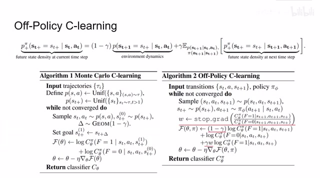
00:18:05–00:19:11 · 画面 029那对比之下呢，我们的 on-policy 的方法，因为它有两个不同的期望，所以我们要在不同的两个 density 标准中间来做 sample。所以在这里呢，我们的 off-policy 呢变得非常简洁。然后呢，我们去估计一下这个 impulsive sampling，这个 omega 就是通也是通过我们之前的 classifier 来进行估计。那记得把这个 gradient 来停住。那最后呢，把我们的 loss function 写出来，因为我们这是用的 recursive 的方法来表达之前的那个 future density distribution。
所以呢，这里记得原来的一项变成了这里的两项。那么最后呢，我们训练这个 classifier 就可以得到这么一个 off-policy C-learning 的方法。那么有了这个方法之后呢，我们就可以做这个 policy learning 了。我们该去学一个好的策略了。那么这里呢，因为我们是要做这个 goal-conditioned C-learning，我们使用的这个未来的状态的 SC-plus 呢就应该是我们的 goal 了。这里呢，作者还做了一个小的松弛。
00:19:11–00:19:25 · 画面 030
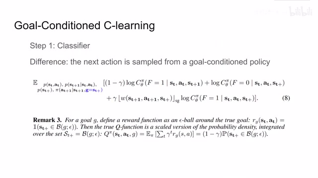
00:19:11–00:19:25 · 画面 030就是说这个够呢，不一定是严格的是严格的 H 就一定要等于这个够。那么这个够呢，实际上是一个 y，也就是半径为 y 的一个这个 y 是一个很小的这个值这么一个球体。也就是说，只要我达到这个状态跟我们的够足够接近，那么我们就可以给 agent 的奖励了。那么这个呢，是我们在训练 classifier 的时候呢，相对于之前的只是随便的 learning classifier 他做了一个小的改动。
00:19:25–00:19:26 · 画面 031
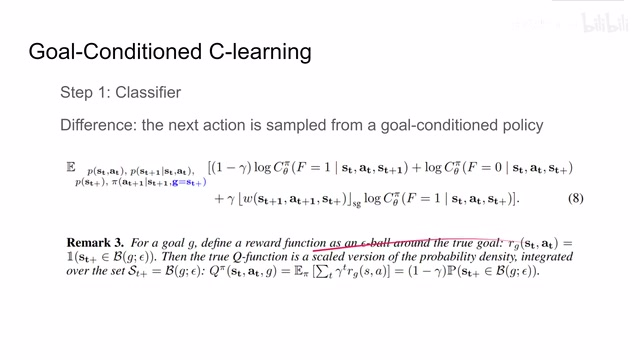
00:19:25–00:19:26 · 画面 03100:19:26–00:19:30 · 画面 032
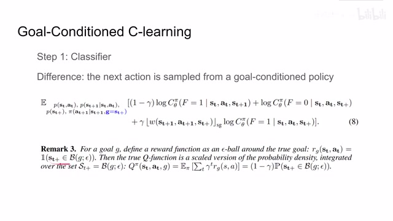
00:19:26–00:19:30 · 画面 03200:19:30–00:19:45 · 画面 033
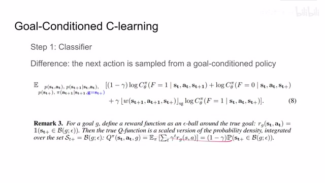
00:19:30–00:19:45 · 画面 03300:19:45–00:19:52 · 画面 034
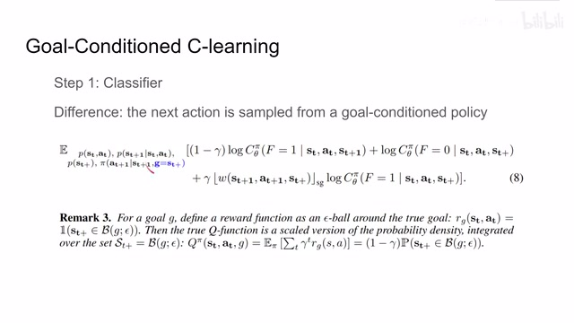
00:19:45–00:19:52 · 画面 03400:19:52–00:21:17 · 画面 035
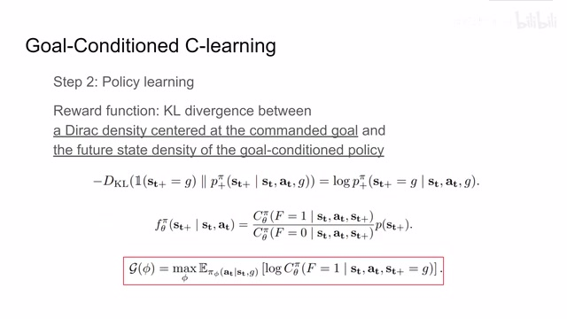
00:19:52–00:21:17 · 画面 035那么第二个呢，就是我们要讲 policy learning 了。那现在呢，我希望我的这个 policy 向着我们的 go 前进。也就是说呢，我希望优化我的 future state density function，它是能够逐渐的变化到这个 go 这个 density distribution。也就是说，我要向着这个 go 的这个目标不断的去，也就是说，我要向着这个 go 的这个状态不断的去做操作嘛。
来选出这个有最大的可能来达到这个 goal 的 policy。因为我们在衡量两个 distribution 之间的距离，所以呢，这里的 loss 呢就是我们的 kl divergence。那么对于我们这个目标这个 goal 它的这个 distribution 呢，我们当然就是希望你能够最精确的达到我们这个目标的所在的位置。所以呢，坐在这里就直接用了一个 delac 分布。
那么这个分布呢，其实就是我把所有的这个概率都集中在这个 go 这个地方。这样子呢，我们希望这个 agent 不断的把我们的这个 future state density 向这个目标这个 distribution 来推。那么可以看到呢，我们就构建了这样一个 kl divergence 取符号。因为我们这是在定义一个 reward 嘛，所以呢，kl divergence 越小这两个 distribution 越接近，我们的这个 reward 呢取符号就应该变得越大。那么根据 kl divergence 定义呢，把它打开。
对这个 state 来做积分，因为我们的加克函数呢，它只在 go 附近有这个值。所以说呢，我们的积分下来就是得到这样一个表达式。那么还记得我之前我们是使用这个 f theta pi 来去估计这个 future state density。而这个 f theta pi 呢，是由我们的 classifier 得到的结果来估计出来的。这里呢，我们发现这个 f theta 其实也就是估计的这个 p plus pi 嘛。
00:21:17–00:21:18 · 画面 036
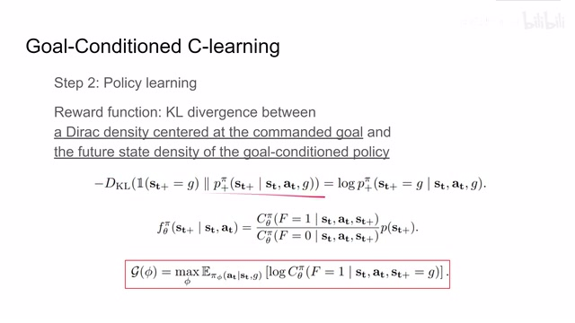
00:21:17–00:21:18 · 画面 03600:21:18–00:22:26 · 画面 037
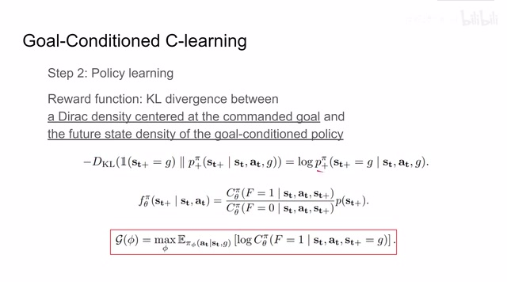
00:21:18–00:22:26 · 画面 037它呢对于我们的 classifier 的结果来说呢是一个单调的函数，我们的这个 classifier 给的值越大，我们对这个 distribution 的估计呢也就是这个地方的值呢也就越大，那我直接就省略一下把这些用不到的项目都给它去掉，而只要保证它是单调的，我直接拿这个 classifier 它的输出来作为我们对这个 probability 它的估计，它如果呢你成大成小其实都没有关系，只要它能保持这个单调的趋势就可以了那么这样子呢，最终我们的 policy learning 它的这个 reward 就是直接可以用我们 classifier 输出的结果，那这也就是为什么之前我们在做这个近似的时候说我们这个东西呢就其实是不需要估计的，可以省略的，那么我们的 policy find 呢当然是希望这个 classifier 给出的值是它的期望是越大越好的，好的，那么以上呢就是我们的这个 goal condition C learning
00:22:26–00:22:27 · 画面 038
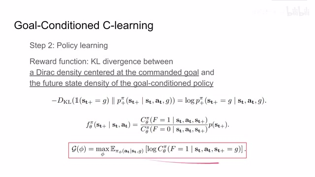
00:22:26–00:22:27 · 画面 03800:22:27–00:22:34 · 画面 039
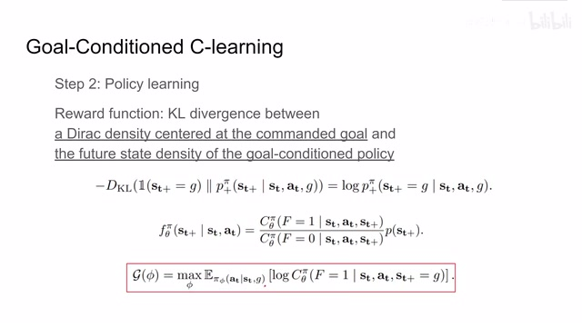
00:22:27–00:22:34 · 画面 03900:22:34–00:22:51 · 画面 040
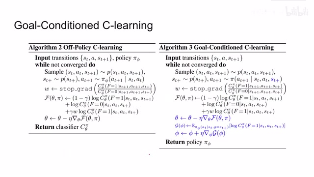
00:22:34–00:22:51 · 画面 040最后呢我们来对比一下它相对于这个 of policy 的 C-learning 多了哪些地方，首先是这里这个 ST plus 是我们想要的定的那个目标那个 goal，所以呢这里呢我们要给它指出来，然后呢训练我们的 classifier 跟之前这个地方是一样的，那么在得到这个 classifier 之后呢我们要开始训练我们的 policy learning 了，这里呢帮我们定义的 reward 给我们的 policy，然后呢做 policy gradient，就任何你想要的 reinforcement learning 方法呢都可以
00:22:51–00:22:52 · 画面 041
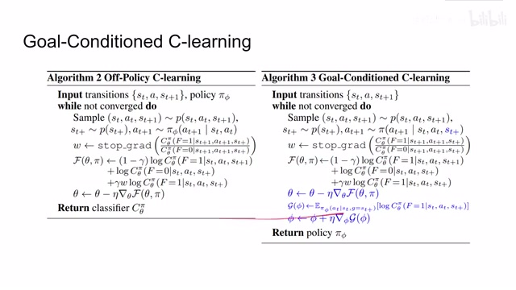
00:22:51–00:22:52 · 画面 04100:22:52–00:23:28 · 画面 042
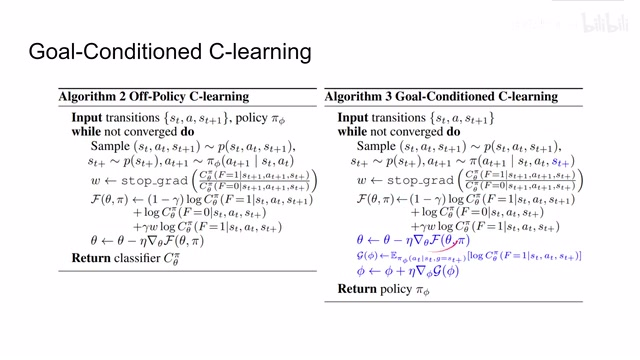
00:22:52–00:23:28 · 画面 042最后呢我们就学到这个 policify，那么这里呢作者实际上呢是使用的 soft like a critic，所以你看虽然整个这一号 c learning 的方法我们之前数学介绍了这么多啊，看起来感觉很麻烦的样子，实际上呢我们这种实践的时候呢就是多学习了一个 classifier，然后改了一下 reward，那么大部分的内容呢还都是在我们原来的比如说 soft like a critic 它的框架之下，好的，那么终于介绍完了这么多理论上的东西，我们直接来看结果
00:23:28–00:23:42 · 画面 043
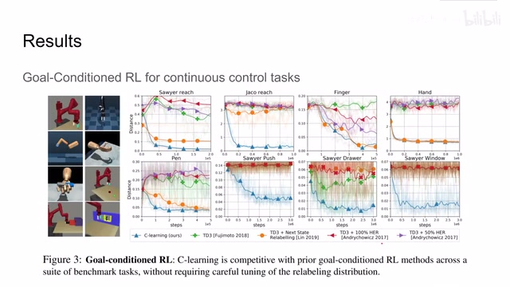
00:23:28–00:23:42 · 画面 043那可以看到这是作者使用的这一些测试的环境，这里呢纵轴呢是我们的 agent 和我们目标的距离，那么相对于之前的方法呢，本文提出的方法对吧性能是非常强悍的，而且对比传统的这个 qlearning 呢不需要调很多的 hyperparameters 是非常好的优雅的一种解决方案，那么除此之外呢，作者还在论文中介绍了以下的内容，我们今天的视频中呢没有解释
00:23:42–00:23:43 · 画面 044
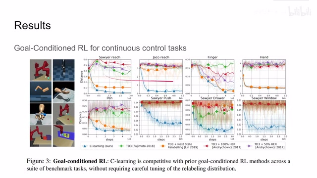
00:23:42–00:23:43 · 画面 04400:23:43–00:23:55 · 画面 045
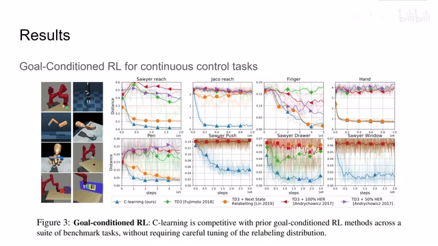
00:23:43–00:23:55 · 画面 04500:23:55–00:24:26 · 画面 046
00:23:55–00:24:26 · 画面 046那么一部分的内容呢，我们在后续的论文中呢也会介绍到，所以呢我们把它放到之后的视频里，好的，那么以上就是我对这篇论文的一个简单的分析，那么还是本文做了一些特别是跟 Q-learning 相关的对比呢，我们在今天没有介绍，如果你感兴趣呢还是非常推荐你去查看原始论文，那么感谢您的收看，再见
00:24:26–00:24:27 · 画面 047
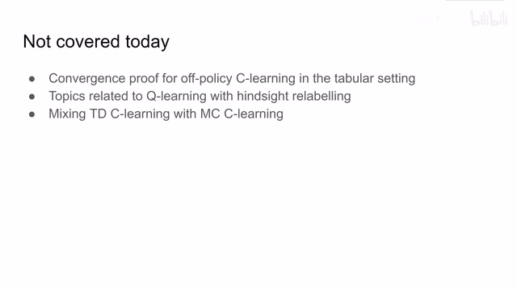
00:24:26–00:24:27 · 画面 047转写与来源说明 · 0 个自动复核提示
保留 52 个原始语音片段，0 个片段触发自动复核提示。提示仅用于定位可能的术语、重复或识别问题，不等于已确认错误。
讲解画面为源视频截图（640×360），不是可编辑 PPT 文件。全片按每秒 2 帧扫描内容变化，逐步展开页保留；连续动画保留代表画面。清晰度受源视频限制。
原视频：paper/合集_2026-10-16_机器人学/[论文简析]C-Learning Learning to .. via Recursive Classification[2011.08909].mp4
SHA-256：8cfed6773c3f0d2bb4c421d6fc8f518b742340ac5a00edf15bf8304bb845f503
全文按视频语音与画面制作。原论文可从上方链接下载；完整资料包保留全文、原始逐字稿、字幕和校对记录。